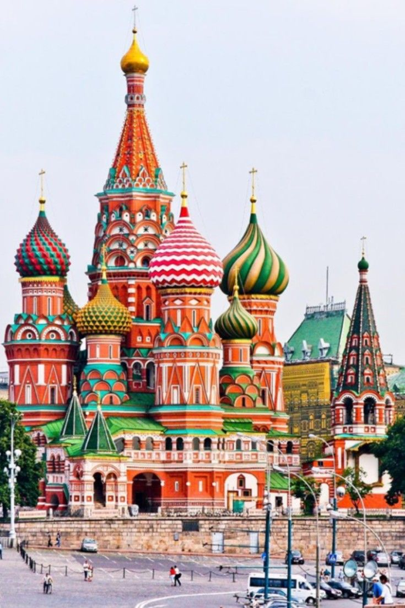
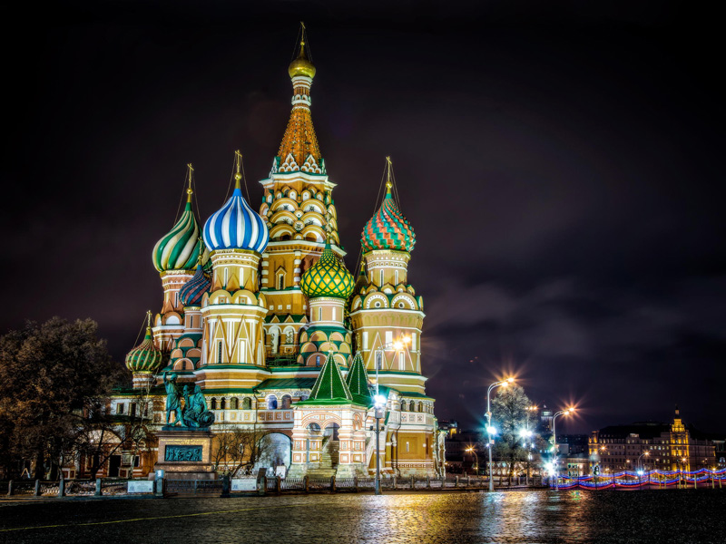
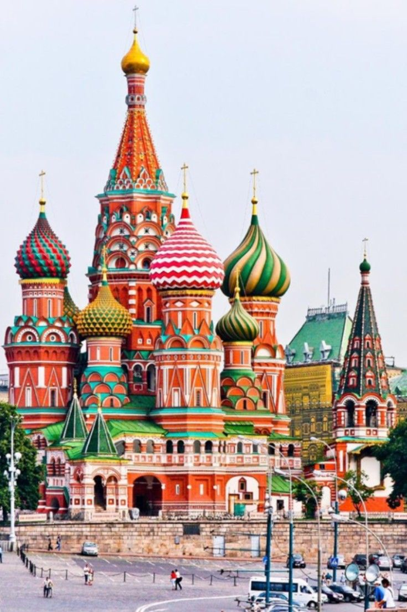
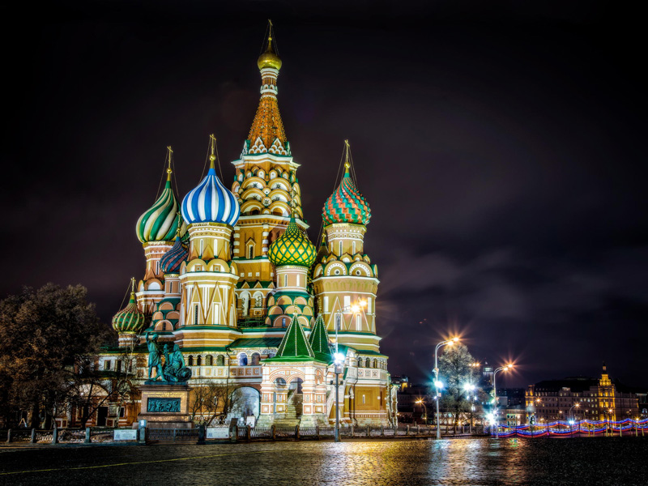

Red Square
Red Square, Russian Krasnaya Ploshchad, open rectangular in Moscow adjacent to the ancient citadel and center of presidency called the Kremlin (Russian: Kreml). The Kremlin and Red Square had been added to UNESCO’s World Heritage List in 1990.
Dating from the past due 15th century, just after the Kremlin walls were finished, Red Square has long been a focus inside the social and political history of Russia and the previous Soviet Union. It has had numerous names, however, the present call has been used consistently for the reason that later seventeenth century. Always a marketplace, the rectangular has additionally housed, at numerous instances, churches, Moscow’s first public library and university, a public theatre, and a printing house.
Red Square has been the scene of executions, demonstrations, riots, parades, and speeches. Almost 800,000 rectangular toes (73,000 rectangular meters), it lies without delay east of the Kremlin and north of the Moskva River. A moat that separated the square from the Kremlin turned into a paved-over in 1812. The State Historical Museum (constructed 1875–83) stands at the northern give up of the square. Directly contrary, at its southern give up, is the 9-towered Cathedral of St. Basil the Blessed (at the beginning Church of the Intercession), built 1554–60 to commemorate the defeat of the Tatars (Mongols) of Kazan and Astrakhan with the aid of Ivan IV (the Terrible). Nearby is a white stone platform (Lobnoye Mesto) dating from the 16th century. From there, edicts and decrees have been read to the assembled loads, and once a year the tsar might gift himself to the human beings. GUM, the previous State Department Store (constructed 1889–93; privatized 1993), is on the east side, and Lenin’s tomb, designed via Alexei Shchusev and finished in 1930, is on the west. Other graves close to Lenin’s tomb flank the spruce-covered Kremlin wall.
 


